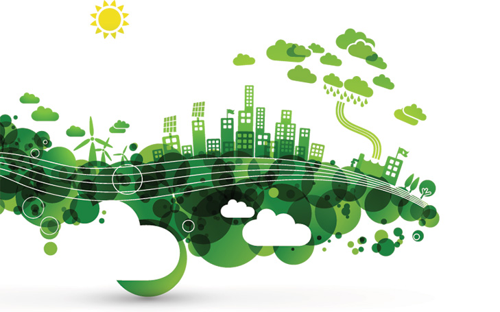

VENTAJAS DE LA SUSTENTABILIDAD
- Menor impacto ambiental.
El pilar principal sobre el que se sostiene todo esto y donde toman forma las ideas para desarrollar la economía sin comprometer la naturaleza. Como implica reducir las emisiones de gases que crean fenómenos como la lluvia ácida o el calentamiento global, provoca directamente que se busquen formas de energía alternativa, limpia e igual de efectiva.
De igual forma, como gran parte de las actividades humanas son responsables del deterioro del ambiente, adoptar esta ideología conlleva hacer algo por reducir la contaminación, lo que puede traer resultados positivos como una mejor calidad del aire, más áreas verdes, la preservación de la biodiversidad del planeta, la subsistencia de más especies, etc.
- Garantía de un mejor futuro.
Con la situación del ambiente tan delicada que hay en la actualidad, el hecho de que se tomen acciones para reducir el efecto del calentamiento de la tierra u otros sucesos como el derretimiento de los polos o los cambios en el clima tan anormal, garantiza que las siguientes generaciones de personas puedan tener una vida adecuada en el futuro.
Esto también significa garantizar que los recursos naturales con los que cuenta el planeta no se agoten y haya suficiente para que se puedan renovar o en el caso contrario, que al menos duren una buena cantidad de años, como en el caso del petroleo o el gas natural.
